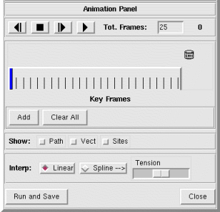

NVIZ Reference Manual
CONTENTS
Animation Panel
Using the Animation panel, you can create a simple
fly-through animation.
-

OPTIONS
 (Reverse)
(Reverse)- Moves backward through the animation one frame at a time.
 (Stop)
(Stop)- Stops the animation.
-
 (Forward)
(Forward)
- Moves forward through the animation one frame at a time.
 (Play)
(Play)- Plays the animation.
- Tot. Frames
- Sets the total number of frames in the animation.
- Key Frames
- On the Animation panel, use the Key Frames
slider to display and select key frame positions. Each vertical black line
represents a frame in the animation. A thick vertical blue line marks the
current position (frame) in the animation. An inverted blue triangle marks
each key frame above the frame markers. Click at any point in the frame
markers (black lines) to move the current position. Click and drag the key
frame markers (blue triangle) to a new position.
- Add
- Adds a key frame at the current position (frame number) marked by the
thick vertical blue line.
- Clear All
- Deletes all key frames.
- Show
- Use the next three options to annotate the animation.
-
- Path
- Shows the path that the animation follows between key frames
(if selected). This is useful for adjusting the tension if using a
spline interpolation.
- Vect
- Draws all loaded vector maps in the animation (if selected).
- Sites
- Draws all loaded sites files in the animation (if selected).
- Interp.
- Sets the interpolation used between key frames.
-
- Linear
- Uses a linear interpolation between key frames.
- Spline
- Uses a spline interpolation between key frames at the selected
tension.
- Tension
- Sets the tension of the spline interpolation.
- Run and Save
- Runs the animation and saves each frame as an image. You must supply a
file name prefix, and set the image and draw type. The image file name
includes the file prefix, frame number and image type. For example, frame
number 12 with a file prefix of FLY saved as a PPM would be named
FLY0012.ppm.
- Close
- Closes the Animation panel.